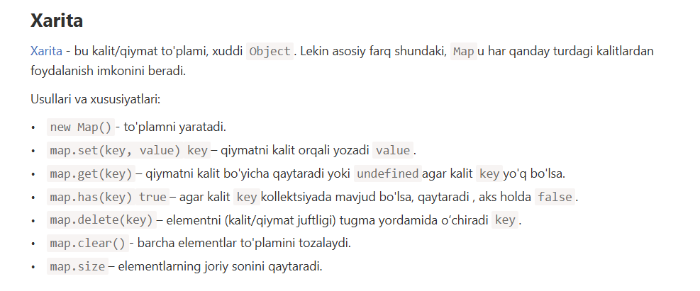

Hozirgi vaqtda biz quyidagi murakkab ma'lumotlar tuzilmalari haqida bilamiz: Nomlangan to'plamlarni saqlash uchun ob'ektlar. Buyurtma qilingan kollektsiyalarni saqlash uchun massivlar. Ammo bu har doim ham kundalik muammolarni hal qilish uchun etarli emas. Shuning uchun Mapham bor Set.
Ko'rib turganimizdek, ob'ektlardan farqli o'laroq, kalitlar satrlarga o'tkazilmagan. Kalitlar uchun har qanday ma'lumot turidan foydalanishingiz mumkin.